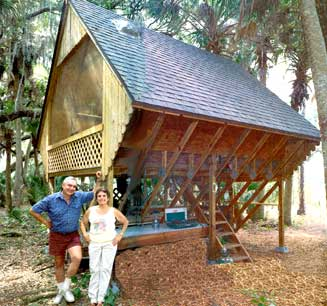
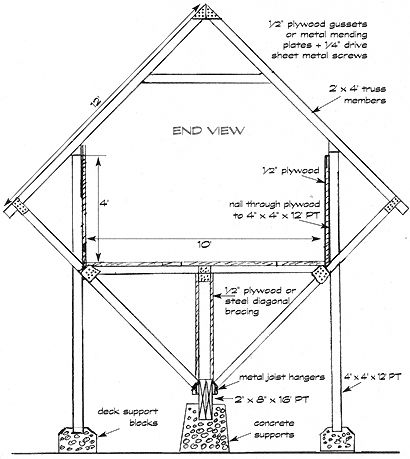
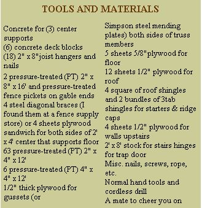
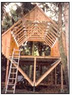
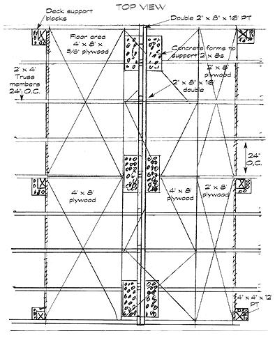
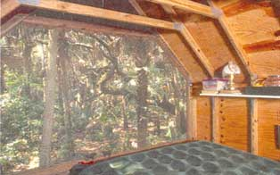
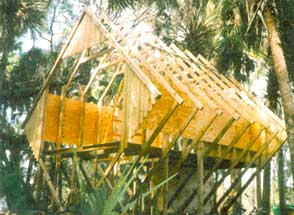

Thunderhouse
Want to build your dream house for only $2,000? Pete and Arlene Charest’s low-impact hideaway cabin provides the answer with their diamond shaped house.
By Pete and Arlene Charest
August/September 2000
We'd had some experience toying with home design, as our livelihood came from selling customized barn and shed plans (a business that was to quickly boom for both of us).
Eventually we became so busy that we needed a hideaway cabin to which we could flee during the cold winter months. Buying a secluded piece of Florida property and designing a functional, unique camp building to live in while planning a low-impact house became our focus. Pete built a scale model of a box tipped over on its edge, with one point up, one point down and poles supporting the other two. Everyone laughed when they saw the model sitting on our kitchen counter that fall (there were frequent comparisons to birdhouses), but their doubts disappeared as soon as they saw photos of the little camp we called "The Thunderhouse" that was taking form in the Florida woods.
The Thunderhouse had to meet several requirements: it had to be off the ground to allow for occasional flooding; it had to offer a view of the fishing herons, egrets, ibis and wood storks in the wetlands; it had to catch the breeze under the leafy canopy on hot days while offering protection from the tropical downpours on a Summer afternoon; and it had to distance us from the occasional snake, armadillo, wild boar, turkey, bobcat, skunk and raccoon.
With no electricity, limited funds and no one to help us build, the camp building began to take shape. Pete designed it so that the lion's share of the building materials were simple 2x4s. The comparatively few cuts needed could be made with a simple miterbox and handsaw. The cabin was completely assembled with our trusty, battery-operated 3/8" cordless driver drill; stainless steel sheet metal screws were driven with a 1/4" driver through Simpson mending plates.
Pete first sandwiched two 16-foot, pressure treated 2x8s together and put them on edge on top of three concrete piers to form the backbone of the building. He laid out a large square, using plywood (that would later be roofing) for a fixture table that would be used to construct the first truss, and then cut the first set of 2x4 framing members. When everything was square and diagonals were checked (very important), he screwed them to the plywood base. This section (which would, at the end, be unscrewed to become the last truss to go up) then became the pattern for the other eight trusses. Stops were fastened to this first truss member, thereby making it a nesting fixture.
The first truss was raised and braced against temporary vertical stops. Much to his wife's distress. Pete then used a 2x4 as a Pike pole to raise the subsequent trusses. My anguished pleas for a more sane process were soon heeded when the fourth truss slipped and almost crushed him. After checking for broken ribs and quieting my sobs, an alternative means by which to raise the remaining trusses (a pulley setup with a rope attached to the bumper of the car) saved the day.
Once the trusses were up, leveled and braced temporarily, the 4' x 8' x 5/8" sheets of plywood were applied and fastened to the frame for stability. The building stands on six 4" x 4" x 12' pressure-treated posts, resting in concrete deck blocks. The posts go in after the plywood and are also screwed to the plywood for stability. Pete screwed everything together not only for additional strength, but also because we always considered the cabin a temporary building which could be repositioned or taken down at a future date. It should be noted that ultimately we plan to build a pole house at which time we will reposition the cabin (it sits on the nicest spot on the property). At that time we will go through the necessary permitting process, but for this very unconventional temporary building we chose not to. It harkens back to the old saw, "it is easier to seek forgiveness than to seek permission."
Prior to the delivery of material, our local lumber yard had to make cuts only on the 1/2" 4-ply roof plywood and rip only one sheet of 5/8" plywood for a section of the 10x16 floor.
It worked out so that everything needed for the entire building, including the 4square of architect-style shingles, was made in one delivery.
We wanted the windows to be as versatile as possible, and settled at first for screens that were stapled under thin strips of window trim. When the window tarps were up during cold or rainy weather, a small skylight installed on the east side of the roof gave us a great view of the moon. Of course, many times it was pleasant enough to leave the tarps down, and for us it was a tremendous experience lying there, surrounded by rustling trees and endless varieties of night sounds with nothing between us and the wilderness but the screen. Frequently, an owl perched on the huge branches of the nearby oak, calling to a mate or instructing a youngster nearby on the fine art of midnight hunting.
When we designed the cabin, we anticipated having to struggle with the Florida heat, not the Florida cold. It wasn't long before we realized that living in the Southeast in the winter months brought some snappy north wind. Originally, the two 10x12 green tarps we used to cover the plywood during the short construction process became the covers for the screened ends of the building. We tolerated this makeshift solution for a while, but in spite of the skylight, the dark tarps made us feel too closed in during the cold snaps, and so this year we installed a large PGT window on the north end. This lovely slide-by window allows light into the building on the infrequent cold, rainy day, but still permits a breeze to refresh the cabin on warm afternoons. This last year, we brought down a little stove with a firelog set that adds ambience and a little warmth before the sun kicks in during the cold spells. We were reluctant to succumb to these creature comforts but the few times we used the stove were just heavenly.
There were many unexpected perks which this design afforded, one being a wonderful place for an outdoor portable kitchen, completely protected from the weather by the overhang. On one side of the building, we built a deep shelf for the campstove and kitchen supplies; the pots and pans hang from the extending trusses on framing nails. We used the other side - a shelf of equal size - as a workbench. There was room for a tiny propane refrigerator (rescued from an abandoned camp trailer), which wedged nicely between the trusses. Even then, there was still plenty of space left for bicycles and tools without the cabin looking at all cluttered. Secluded underneath, out of sight under the overhang on the back side, is the Porta Potti.
We climb to the cabin's interior via a short stairway and ending in a trapdoor. The door opens with a simple pulley system and becomes part of the usable floor space when closed. One of the lessons learned the hard way, early on, was that the trapdoor will drop back down unless it is pulled past the straight up and down position. A counterweight solved that problem nicely, but not before we both were sporting a little head trauma.
One really unpleasant problem that winter residents of Florida have to contend with (when leaving a building closed up and empty for over half a year in the extreme heat and humidity) is mildew and condensation damage. Our design allows constant free flow of air through the camp building all year round so that everything is always clean, fresh and ready to use when we return. You will see that the pressure-treated fence pickets used to cover the screened gable ends allow air and excess heat to pass through but still keep the cabin dry. Scattering mothballs around when we leave in March seems to discourage the mice and other small wildlife intruders.
We realize that we have been very fortunate in never experiencing any damage during a storm. Even so, we plan to drive in ground anchors this coming winter so that there is no chance of the building getting caught in the wind. The damage experienced during Hurricane Andrew is a lesson for everyone about the efficacy of "an ounce of prevention ...."
We would suggest that anyone interested in building a camp like ours - or anything else, for that matter - take the time to construct a scale model. You will feel more confident and have a guide to follow as you work. You can see the shape and proportion in a way that a drawing on paper can never show. A scale of one inch to one foot works particularly well. Pete has often wondered why high school shop courses don't include model building; it is such a great tool to understand construction detail.
This particular cabin could be used for many applications - from a mountain hideaway to a fishing camp - and it can be scaled down easily to become a wonderful playhouse. Made from 8-foot 2x4s for a nice proportion and using canvas for the roof, such a playhouse could be built for a song.
The Thunderhouse is a most unconventional design, but this building works well for us and is great fun. For years, Pete has been very successful designing and constructing small storage buildings, but he is neither a structural engineer nor an architect; he's just a guy who has an eye for interesting design and a willingness to endure mistakes without getting discouraged. With both of us keeping a constant eye on the bottom line and employing a "waste not, want not" philosophy throughout, we produced this versatile, quickly-built cabin for under $2,000 - and with barely enough scrap and waste lumber remaining to make a decent campfire. We have yet to see a better and more efficient design for the price .
Full architectural plans, for Pete and Arlene Charest's Thunderhouse cabin are available for $29.95 directly from them, at Better Barns, 126 Main St., So. Bethlehem, CT 06751. For more information on their business, visit www.betterbarns.8m.com . Review your local building codes before building any permanent structure.
|
 The six 4" x4" x12' PT support posts rest on concrete deck blocks. This was a reasonable compromise with practicality, but any structure in windy areas should be modified with a firmer foundation. |
Though small, the cabin provides beautiful views of the forest. |
 All trusses in place. This photo shows the structural importance of the center 2x4 floor support. The 4 x 8 plywood sheets fasted to the frame are not only an inexpensive outer wall but also add strength. |
|
 |
 |
 |
|
 |
 |
 |